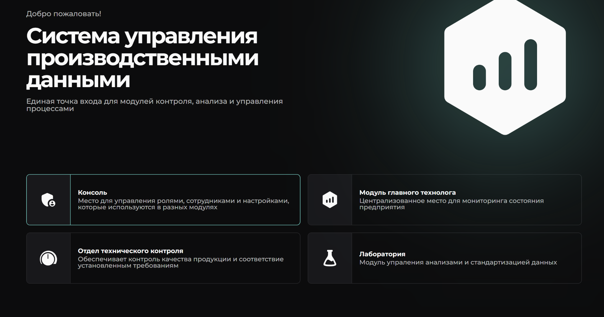

Руководство пользователя
1. Назначение системы
MEStegra предоставляет единую точку входа для модулей контроля, анализа и управления производственными процессами. Система разработана для сотрудников предприятия, отвечающих за технологические параметры, качество продукции и лабораторные исследования.
Цель внедрения — прозрачность производственного состояния, оперативный контроль качества и стандартизация данных.
Добро пожаловать в систему MEStegra
Перед началом работы ознакомьтесь с интерфейсом авторизации и процессом регистрации.

Экран авторизации пользователя в системе MEStegra
Видеопример регистрации нового пользователя
2. Структура системы
После входа пользователю доступна стартовая страница с выбором основных модулей:
Интерфейс поддерживает светлую и тёмную темы для удобства работы в разных условиях освещения.
3. Консоль
Консоль — это административная часть системы, в которой выполняются задачи по настройке, управлению пользователями, ролями, правами доступа и справочниками, которые используются в разных модулях системы.
Назначение консоли
- Управление пользователями (создание, изменение, блокировка)
- Назначение ролей и прав доступа
- Редактирование справочников, используемых в модулях системы
- Проверка активности и статуса учетных записей
- Настройка системных параметров
Основные разделы консоли
- Пользователи — список всех учетных записей, управление доступом
- Роли — назначение прав (например: лаборант, контролёр, технолог, администратор)
- Справочники — элементы, которые используются в других модулях (типы продукции, пробы, параметры и т.д.)
- Настройки системы — базовые параметры работы платформы
Типовые действия администратора
- Создать нового пользователя и установить пароль
- Назначить роль, определяющую область доступа
- При необходимости ограничить права (например, только просмотр)
- Отредактировать или удалить устаревшие записи
- Добавить новые значения в справочники (например, новый вид продукции)
Видео-разбор работы консоли
В видео показано: создание пользователя, назначение ролей, работа со справочниками, изменение параметров.
3. Модуль «Главного технолога»
Модуль используется для анализа текущего состояния производственных процессов. Предоставляет сводные показатели по предприятию и помогает принимать управленческие решения.
Основные задачи модуля:
• получение оперативных данных по цехам;
• отслеживание ключевых показателей в реальном времени;
• подготовка отчётов и сводок для руководства.
Кому предназначен:
Главный технолог, технические руководители, оперативно-диспетчерская служба.

Разделы внутри модуля
- Результаты анализов — мониторинг лабораторных показателей с подсветкой отклонений.
- Нормы анализов — установленные предельные значения по каждому продукту.
- Суточный расход реагентов — контроль использования реагентов в разрезе анализов.
- Пробы — журнал отобранных проб с привязкой к цехам, продуктам и сотрудникам.
Если вы лаборант — используйте свой специализированный модуль. Данный раздел предназначен для анализа совокупных данных на уровне предприятия.
Видео-обзор модуля
Демонстрация интерфейса и основных функций:
4. Модуль «Отдел технического контроля (ОТК)»
Модуль «ОТК» используется для управления процессами контроля качества продукции на предприятии, фиксации проб, проведении инспекций, ведении журналов чисток и генерации QR-кодов для оборудования.
Все основные разделы доступны через боковое меню, а действия сопровождаются уведомлениями об успехе или ошибке.
4.1 Раздел «Цеха»
Раздел «Цеха» позволяет заводить, редактировать и удалять цеха, в которых проводится технологический контроль или отбор проб.
- 🔹 Указание названия цеха (например: «Цех №1. Блендерный»)
- 🔹 Контроль статуса (активен / деактивирован)
- 🔹 Привязка оборудования и точек отбора проб
Добавление нового цеха — по кнопке «+ Добавить». При сохранении система уведомляет об успешном сохранении.
4.2 Раздел «Продукты»
Раздел «Продукты» содержит полный перечень продукции, проходящей через цепочку отбора проб, контроля качества и инспекций.
Функции:
- 🔹 Добавление/редактирование продукта
- 🔹 Указание типа: сырьё, полуфабрикат, конечная продукция
- 🔹 Связь с цехом и точками отбора
4.3 Раздел «ТОП (Точки отбора проб)»
Раздел «ТОП» позволяет настроить точки, где отбираются пробы продукции: линии, узлы, транспортёры и др.
Функциональность:
- 🔹 Привязка к цеху и продукту
- 🔹 Указание физического местоположения
- 🔹 Управление статусом
4.4 Раздел «Пробы»
Раздел «Пробы» используется для фиксации отбора проб и связки с продуктами, ТОП, лабораторной обработкой.
Функции:
- 🔹 Добавление новой пробы с номером, датой, ТОП
- 🔹 Привязка к продукту и цеху
- 🔹 Контроль статуса: отобрана, сдана, исследована
4.5 Раздел «Инспекции»
Раздел «Инспекции» используется для регистрации техосмотров и проверок оборудования.
Возможности:
- 🔹 Добавление инспекции: дата, объект, статус
- 🔹 Привязка к ТОП и пробам
- 🔹 Просмотр журнала инспекций
4.6 Раздел «Чистки»
Журнал «Чистки» фиксирует все плановые и внеплановые мероприятия по очистке оборудования и транспортных узлов.
- 🔹 Регистрация даты, объекта и результата
- 🔹 Привязка к инструменту, цеху или ТОП
- 🔹 Контроль статусов обслуживания
4.7 Раздел «QR-печать»
Раздел «QR-печать» позволяет генерировать уникальные QR-коды для размещения на оборудовании, точках отбора и цехах.
- 🔹 Привязка QR-кода к объекту контроля
- 🔹 Распечатка и экспорт
5. Модуль «Лаборатория»
Модуль «Лаборатория» обеспечивает полный контроль всех этапов лабораторных исследований: от регистрации анализов до мониторинга нормативных документов и формул расчётов. Инструмент незаменим для служб контроля качества, технологов, химиков и аналитиков.
✅ Доступны фильтры по датам, параметрам, продуктам и статусам.
✅ Показывает актуальные показатели для контроля качества в режиме “здесь и сейчас”.
✅ Позволяет видеть тренды по потреблению каждого реагента.
✅ Помогает планировать закупки и избегать простоев.
✅ Поддерживает разные нормы для разных продуктов, ГОСТов, классов продукции.
✅ Автоматически отмечает отклонения — визуально и уведомлениями.
✅ Данные используются для отчётов и экономического планирования.
✅ Контроль по факту / по плану.
✅ Экономит время на ввод однообразных данных.
✅ Полезно для постоянных внутренних проверок.
✅ Поддержка неограниченного числа параметров для каждого анализа.
✅ Отлично подходит для гибкости на производстве и R&D.
✅ Использует параметры анализов как переменные.
✅ Можно валидировать формулы на корректность прямо в системе.
✅ Единицы измерения, запас, дата поставки, срок годности.
✅ Можно связать с расходом на анализы.
✅ Привязываются к конкретным анализам и параметрам.
✅ Быстрый доступ к документу в один клик.
⚙️ Система мгновенно сообщает о результатах действий: «Успех», «Ошибка», «Изменения сохранены».
6. Общие элементы интерфейса
Функциональные возможности
• Переключение между светлой и тёмной темами.
• Доступ к mini-руководству по каждому разделу прямо на странице.
• Удобный поиск по таблицам и спискам данных.
• Система всплывающих уведомлений об операциях (сохранение, ошибка, успех и т.д.).
Организация рабочего пространства
• Навигация по разделам — через левое боковое меню.
• Основные действия и данные расположены в центре.
• Информационные подсказки и ошибки отображаются в правой части интерфейса.
8. Поддержка
По вопросам функционирования системы обращайтесь к администратору MEStegra или ответственному разработчику интерфейса.
Сообщайте модулю сопровождения, если видите сообщения об ошибке (например, “Failed to load module”) — это помогает диагностировать сбои интеграций.